并发编程的艺术
并发机制的底层实现原理
多线程安全有三个特点:原子性、可见性、有序性;
java提供了两种机制实现，synchronized和volatile；synchronized同过加锁实现三个特点；但volatile
只能保证可见性和有序性，通常和CAS结合来实现原子性。
volatile
volatile是轻量级的 synchronized，它在多处理器开发中保证了共享变量的“可见性”。可见性的意思是当一个线程 修改一个共享变量时，另外一个线程能读到这个修改的值。如果volatile变量修饰符使用恰当的话，它比synchronized的使用和执行成本更低，因为它不会引起线程上下文的切换和调度。
volatile解决的问题: 1、多处理器的计算机能够暂时在寄存器或本地内存缓冲区中保存内存中的值。结果是运行在不同处理器上的线程 可能在同一个内存位置取到不同的值。 2、编译器可以改变指令执行的顺序以使吞吐量最大化。这种顺序上的变化不会改变代码语义，但是编译器假定内存的值 仅仅在代码中有显式的修改指令时才会改变。然而，内存的值可以被另一个线程改变。 如何保证"可见性": 对有volatile变量修饰的共享变量进行写操作的时候，JVM就会向处理器发送一条Lock前缀的指令， lock前缀的指令在多核处理器上会引发两件事情: 1、将当前CPU缓存行的数据写回到系统内存； 2、一个处理器的缓存写回到内存会导致其他处理器的缓存无效：在多处理器下，为了保证各个处理器的缓存是一致的， 就会实现缓存一致性协议，每个处理器通过嗅探在总线上传播的数据来检查自己缓存的值是不是过期了， 当处理器发现自己缓存行对应的内存地址被修改，就会将当前处理器的缓存行设置成无效状态， 当处理器对这个数据进行修改操作的时候，会重新从系统内存中把数据读到处理器缓存里。 总结: 多线程程序任何对volatile修饰的变量的访问均需要从共享内存中获取， 而对它的改变必须同步刷新回共享内存，它保证了所有线程对变量访问的可见性。 volatile读写: 1、对任意单个volatile变量的读/写具有原子性，但类似于volatile++这种复合操作不具有原子性。 2、当写一个volatile变量时，JMM会把该线程对应的本地内存中的共享变量值刷新到主内存。 3、当读一个volatile变量时，JMM会把该线程对应的本地内存置为无效。线程接下来将从主内存中读取共享变量。 volatile写-读内存语义: 1.线程A写一个volatile变量,实质上是线程A向接下来将要读这个volatile变量的某个线程发出了(其对共享变量所做修改的)消息。 2.线程B读一个volatile变量,实质上是线程B接收了之前某个线程发出的(在写这个volatile变量之前对共享变量所做修改的)消息。 3.线程A写一个volatile变量，随后线程B读这个volatile变量，这个过程实质上是线程A通过主内存向线程B发送消息。 volatile写-读内存语义实现:基于保守策略的JMM内存屏障插入策略。 在每个volatile写操作的前面插入一个StoreStore屏障; 在每个volatile写操作的后面插入一个StoreLoad屏障; 在每个volatile读操作的前面插入一个LoadLoad屏障; 在每个volatile读操作的后面插入一个LoadStore屏障。
synchronized
1、synchronized实现同步的三种形式: 对于普通同步方法，锁是当前实例对象; 对于静态同步方法，锁是当前类的Class对象; 对于同步方法块，锁是Synchonized括号里配置的对象。 JVM基于进入和退出Monitor对象来实现方法同步和代码块同步，代码块同步是使用monitorenter和monitorexit指令实现的； monitorenter指令在编译后会插入到同步代码块的开始位置，而monitorexit会插入到方法结束处和异常处； 同步方法则是依靠方法修饰符上的ACC_SYNCHRONIZED(编译器自动添加)来完成的。 无论采用哪种方式，其本质是对一个对象的监视器（monitor）进行获取，而这个获取过程是排他的， 即同一时刻只能有一个线程获取到由synchronized所保护对象的监视器。 synchronized确保多个线程在同一个时刻,只能有一个线程处于方法或者同步块中, 保证了线程对变量访问的可见性和排他性 2、synchronized用的锁是存在Java对象头里的。如果对象是数组类型，则虚拟机用3个字宽（Word）存储对象头， 如果对象是非数组类型，则用2字宽存储对象头。在32/64位虚拟机中，1字宽等于4/8个字节. 3、在 Java SE 1.6中，锁一共有4种状态，级别从低到高依次是：无锁状态、偏向锁状态、轻量级锁状 态和重量级锁状态， 这几个状态会随着竞争情况逐渐升级。锁可以升级但不能降级。
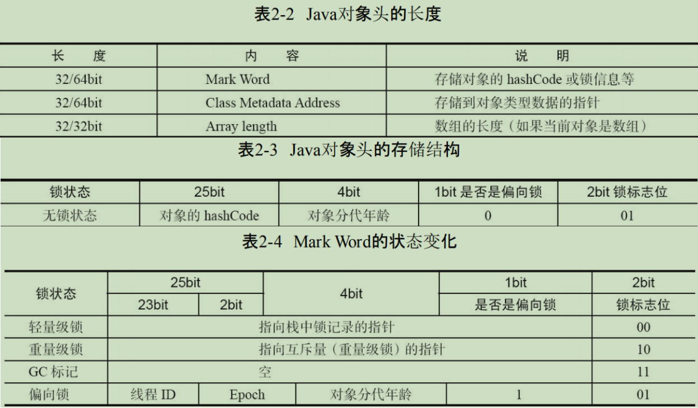
- 偏向锁
大多数情况下，锁不仅不存在多线程竞争，而且总是由同一线程多次获得，为了让线程获得锁的代价更低而引入了偏向锁。
当一个线程访问同步块并获取锁时，会在对象头和栈帧中的锁记录里存储锁偏向的线程ID，以后该线程在进入和退出同步块时不需要进行CAS操作来加锁和解锁，只需简单地测试一下对象头的Mark Word里是否存储着指向当前线程的偏向锁。如果测试成功，表示线程已经获得了锁。如果测试失败，则需要再测试一下Mark Word中偏向锁的标识是否设置成1（表示当前是偏向锁）：如果没有设置，则使用CAS操作获得锁；如果设置了，则尝试使用CAS将对象头的偏向锁指向当前线程，如果失败则会进行偏向锁的撤销。当JVM启用了偏向锁模式（JDK6以上默认开启），新创建对象的Mark Word中的Thread Id为0，说明此时处于可偏向 但未偏向任何线程，也叫做匿名偏向状态(anonymously biased)。 线程在执行同步块之前，JVM会先在当前线程的栈桢中创建用于存储锁记录的空间，并将对象头中的Mark Word 复制到Lock Record中，官方称为Displaced Mark Word。 偏向锁逻辑 1.线程A第一次访问同步块时，先检测对象头Mark Word中的标志位是否为01，依此判断此时对象锁是否处于无锁状态 或者偏向锁状态（匿名偏向锁）； 2.然后判断偏向锁标志位是否为1，如果不是，则进入轻量级锁逻辑（使用CAS竞争锁），如果是，则进入下一步流程； 3.判断是偏向锁时，检查对象头Mark Word中记录的Thread Id是否是当前线程ID，如果是，则表明当前线程 已经获得对象锁，以后该线程进入同步块时，不需要CAS进行加锁，只会往当前线程的栈中添加 一条Displaced Mark Word为空的Lock Record中，用来统计重入的次数。 退出同步块释放偏向锁时，则依次删除对应Lock Record，但是不会修改对象头中的Thread Id； 注：偏向锁撤销是指在获取偏向锁的过程中因不满足条件导致要将锁对象改为非偏向锁状态， 而偏向锁释放是指退出同步块时的过程。 4.如果对象头Mark Word中Thread Id不是当前线程ID，则进行CAS操作，企图将当前线程ID替换进Mark Word。 如果当前对象锁状态处于匿名偏向锁状态（可偏向未锁定），则会替换成功（将Mark Word中的Thread id由匿名0 改成当前线程ID，在当前线程栈中找到内存地址最高(栈底，最先入栈)的可用Lock Record，将线程ID存入),获取到锁， 执行同步代码块； 5.如果对象锁已经被其他线程占用，则会替换失败，开始进行偏向锁撤销，这也是偏向锁的特点，一旦出现线程竞争， 就会撤销偏向锁； 6.偏向锁的撤销需要等待全局安全点（safe point，代表了一个状态，在该状态下所有线程都是暂停的）, 暂停持有偏向锁的线程，检查持有偏向锁的线程状态（遍历当前JVM的所有线程，如果能找到，则说明偏向的线程还存活), 如果线程还存活，则检查线程是否在执行同步代码块中的代码，如果是，则升级为轻量级锁，进行CAS竞争锁； 注：每次进入同步块（即执行monitorenter）的时候都会以地址从高到低的顺序(从栈底到栈顶)在栈中找到 第一个可用的Lock Record，并设置偏向线程ID；每次解锁（即执行monitorexit）的时候都会将栈顶的Lock Record 移除。所以如果能找到对应的Lock Record说明偏向的线程还在执行同步代码块中的代码。 7.如果持有偏向锁的线程未存活，或者持有偏向锁的线程未在执行同步代码块中的代码，则进行校验是否允许重偏向， 如果不允许重偏向，则撤销偏向锁，将Mark Word设置为无锁状态（未锁定不可偏向状态），然后升级为轻量级锁， 进行CAS竞争锁； 8.如果允许重偏向，设置为匿名偏向锁状态,CAS将偏向锁重新指向新线程（在对象头和线程栈帧的锁记录中存储当前 线程ID). 9.唤醒暂停的线程，从安全点继续执行代码。
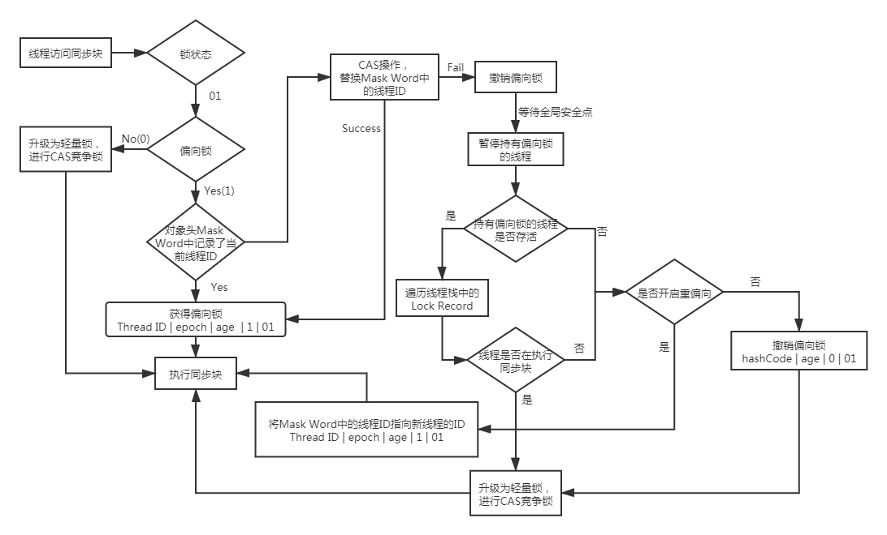
- 轻量级锁
轻量级锁逻辑： 1.当线程访问同步块,先判断锁状态标志位，如果是00,则说明是轻量级锁,JVM会先在当前线程栈帧中分配Lock Record空间； 2.将锁对象头中的Mark Word拷贝到当前线程的Lock Record中，称为Displaced Mark Word，然后使用CAS， 将对象头中的Mark Word修改为指向当前线程栈中Lock Record的指针。如果成功，则获取轻量级锁，执行同步块中的代码; 如果失败，则进行自旋竞争锁，自旋达到一定的次数如果依旧没有获取到锁，则升级为重量级锁 (因为自旋会消耗CPU,为了避免无用的自旋,一旦锁升级为重量级锁,就不会恢复到轻量级锁,自旋的线程会被挂起阻塞住)； 3.执行完同步代码块代码，退出同步代码块，使用CAS开始轻量级锁解锁，解锁的条件需要满足以下两个： 1）对象头Mark Word中锁记录指针是否依旧指向当前线程Lock Record 2）拷贝在当前线程Lock Record的Mark Word信息是否与对象头中的Mark Word一致。 4.如果满足，则成功释放锁； 5.如果不满足，则释放锁，唤醒被挂起阻塞的线程，开始重量级锁的竞争。 注：当超过自旋阈值，竞争的线程就会把锁对象Mark Word指向重量级锁，导致Mark Word中的值发生了变化， 当原持有轻量级锁的线程执行完毕，尝试通过CAS释放锁时，因为Mark Word已经指向重锁， 不再是指向当前线程Lock Record的指针，于是解锁失败，这时原持有轻量级锁的线程就会知道锁已经升级为重量级锁。 重入计数: 类似偏向锁，会往当前线程的栈中添加一条Displaced Mark Word为空的Lock Record中，用来统计重入的次数
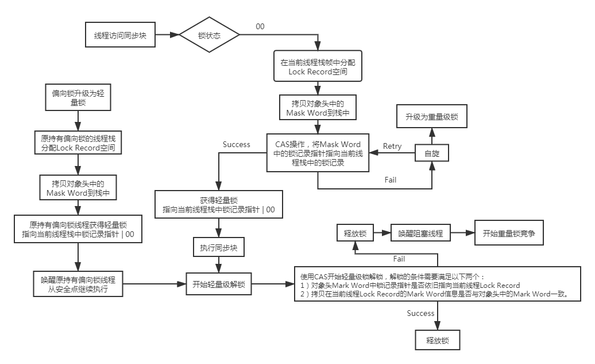
- 重量锁
重量级锁是通过互斥量(Mutex)来实现的,即一个线程进入了synchronized同步块,在未完成任务时,会阻塞后面的所有线程; Java线程是映射到操作系统的原生线程上的,如果要阻塞或唤醒一个线程,都需要依靠操作系统从当前用户态转换到核心态中， 这种状态转换需要耗费处理器很多时间，对于简单同步块，可能状态转换时间比用户代码执行时间还要长， 导致实际业务处理所占比偏小，性能损失较大
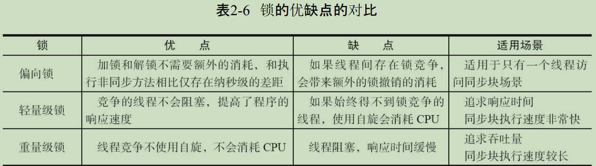
原子操作
- CAS操作
CAS(Compare And Swap)操作包含三个操作数:内存位置（V）、预期原值（A）和新值(B)。 如果内存位置的值与预期原值相匹配，那么处理器会自动将该位置值更新为新值。否则，处理器不做任何操作。 - CAS的三大问题
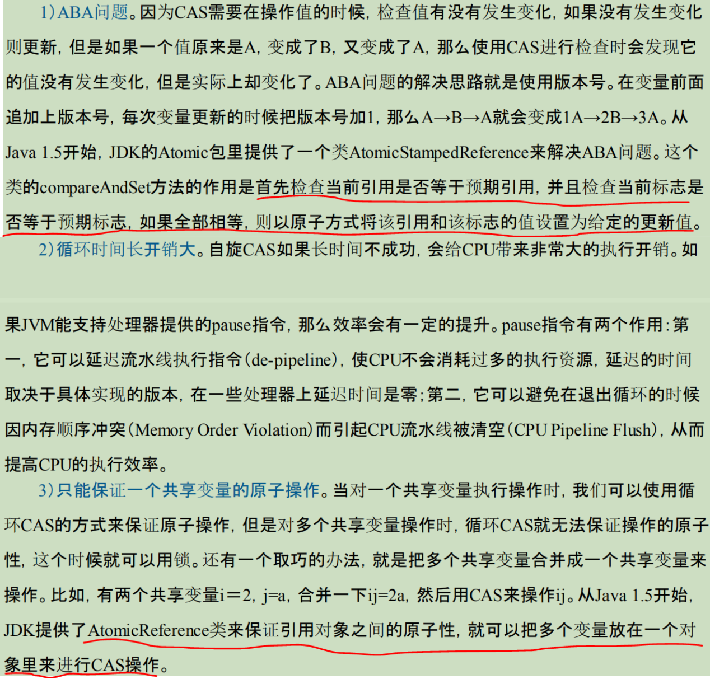
// AtomicStampReference类中方法
public boolean compareAndSet(V expectedReference,
V newReference,
int expectedStamp,
int newStamp) {
Pair<V> current = pair;
return
expectedReference == current.reference && // 期望引用==当前引用
expectedStamp == current.stamp && // 期望版本号==当前版本号
// 如果新引用==当前引用，且新版本==当前版本，于是没必要修改
// 否则就创建一个新pair，通过CAS操作赋值给当前pair.
((newReference == current.reference &&
newStamp == current.stamp) ||
casPair(current, Pair.of(newReference, newStamp)));
}
-
JAVA中提供了原生CAS操作
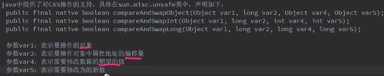 -
实现原子操作
1、首先处理器会自动保证基本的内存操作的原子性。处理器保证从系统内存中读取或者写入一个字节是原子的； 最新的处理器能甚至能保证单处理器对同一个缓存行里进行16/32/64位 的操作是原子的; 2、处理器提供总线锁定和缓存锁定两个机制来保证复杂内存操作(如跨总线宽度、跨多个缓存行和跨页表的访问)的原子性。 所谓总线锁定就是使用处理器提供的一个LOCK# 信号，当一个处理器在总线上输出此信号时，其他处理器的请求将被阻塞住， 那么该处理器可以独占共享内存。 所谓缓存锁定是指内存区域如果被缓存在处理器的缓存行中,并且在Lock操作期间被锁定,那么当它执行锁操作回写到内存时, 处理器不在总线上声言LOCK#信号，而是修改内部的内存地址，并允许它的缓存一致性机制来保证操作的原子性， 因为缓存一致性机制会阻止同时修改由两个以上处理器缓存的内存区域数据,当其他处理器回写已被锁定的缓存行的数据时, 会使缓存行无效。 但是有两种情况下处理器不会使用缓存锁定。 第一种情况是:当操作的数据不能被缓存在处理器内部,或操作的数据跨多个缓存行(cache line)时,处理器会调用总线锁定。 第二种情况是:有些处理器不支持缓存锁定。对于Intel 486和Pentium处理器，就算锁定的内存区域在处理器的缓存行中 也会调用总线锁定。
-
在java中实现原子操作
1、使用自旋CAS实现原子操作：利用了处理器提供的CMPXCHG指令实现，循环进行CAS操作直到成功为止； JDK的并发包里提供了一些类来支持原子操作，如AtomicBoolean、AtomicInt、AtomicLong。 2、锁机制保证了只有获得锁的线程才能够操作锁定的内存区域。JVM内部实现了很多种锁机制， 有偏向锁、轻量级锁和重量锁(互斥锁)。除了偏向锁，JVM实现锁的方式都用了循环CAS， 即当一个线程想进入同步块的时候使用循环CAS的方式来获取锁，当它退出同步块的时 候使用循环CAS释放锁。
JAVA内存模型
Java内存模型基础
-
线程通信:是指线程之间以何种机制来交换信息。在命令式编程中，线程之间的通信机制有两种：共享内存和消息传递。
在共享内存的并发模型里，线程之间共享程序的公共状态，通过写-读内存中的公共状态进行隐式通信。
在消息传递的并发模型里，线程之间没有公共状态，线程之间必须通过发送消息来显式进行通信。
Java的并发采用的是共享内存模型，Java线程之间的通信总是隐式进行。 -
线程同步:同步是指程序中用于控制不同线程间操作发生相对顺序的机制。
在共享内存并发模型里，同步是显式进行的。程序员必须显式指定某个方法或某段代码需要在线程之间互斥执行。
在消息传递的并发模型里，由于消息的发送必须在消息的接收之前，因此同步是隐式进行的。 -
java内存模型抽象机构
在Java中，所有实例域、静态域和数组元素都存储在堆内存中，堆内存在线程之间共享；局部变量，方法定义参数和异常处理器参数不会在线程之间共享，它们不会有内存可见性问题，也不受内存模型的影响。
Java线程之间的通信由Java内存模型（JMM）控制，JMM决定一个线程对共享变量的写入何时对另一个线程可见。从抽象的角度来看，JMM定义了线程和主内存之间的抽象关系：线程之间的共享变量存储在主内存（Main Memory）中，每个线程都有一个私有的本地内存，本地内存中存储了该线程已读/写共享变量的副本。本地内存是JMM的一个抽象概念，并不真实存在。它涵盖了缓存、写缓冲区、寄存器以及其他的硬件和编译器优化。 线程A、B之间通信过程:
1) 线程A把本地内存A中更新过的共享变量刷新到主内存中去。
2) 线程B到主内存中去读取线程A之前已更新过的共享变量 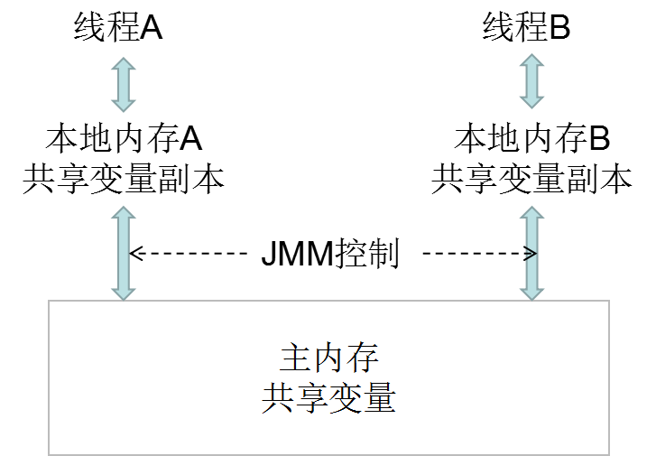 -
java内存可见性保证
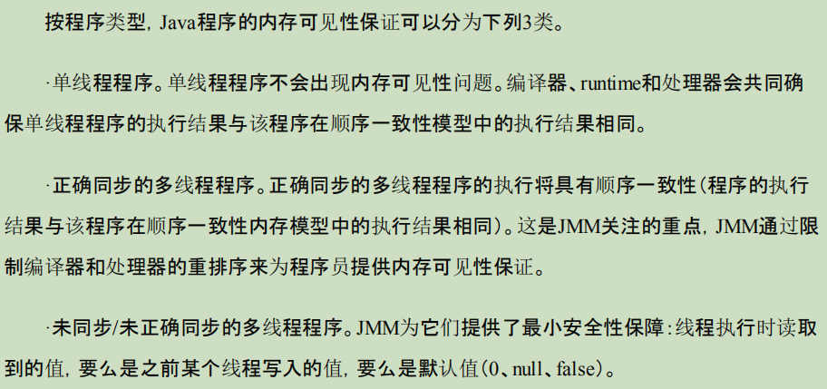 最小安全性保证线程读取到的值，要么是之前某个线程写入的值，要么是默认值（0、null、false）。但最小安全性并不保证 线程读取到的值，一定是某个线程写完后的值。最小安全性保证线程读取到的值不是无中生有，但并不保证线程读取到的值一定是正确的。
重排序
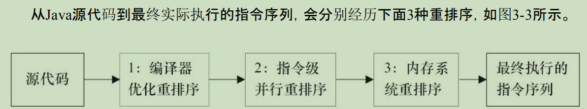
1、编译器优化的重排序。编译器在不改变单线程程序语义的前提下，可以重新安排语句的执行顺序。
2、指令级并行的重排序。现代处理器采用了指令级并行技术来将多条指令重叠执行。如果不存在数据依赖性，处理器可以改变语句对应 机器指令的执行顺序。
3、内存系统的重排序。由于处理器使用缓存和读/写缓冲区，这使得加载和存储操作看上去可能是在乱序执行。
-
数据依赖性
如果两个操作访问同一个变量，且这两个操作中有一个为写操作，此时这两个操作之间就存在数据依赖性。
数据依赖分为3种类型，写后读、写后写、读后写。
对于存在数据依赖的操作，如果重排序操作执行顺序，程序结果就会改变；所以编译器和处理器在重排序时，会遵守数据依赖性，编译器和处理器不会改变存在数据依赖关系的两个操作的执行顺序。
但是数据依赖性仅针对单个处理器中执行的指令序列和单个线程中执行的操作，不同处理器之间和不同线程之间的数据依赖性不被编译器和处理器考虑。 -
as-if-serial
as-if-serial：不管怎么重排序（编译器和处理器为了提高并行度），（单线程）程序的执行结果不能被改变。编译器、runtime和处理器都必须遵守as-if-serial语义。
在单线程程序中，对存在控制依赖(例如if-else判断)的操作重排序，不会改变执行结果；但在多线程程序中，对存在控制依赖的操作重排序，可能会改变程序的执行结果。 - 内存屏障:
为了保证内存可见性，对于处理器重排序，JMM的处理器重排序规则会要求Java编译器在生成指令序列时，插入特定类型的内存屏障指令，通过内存屏障指令来禁止特定类型的处理器重排序。
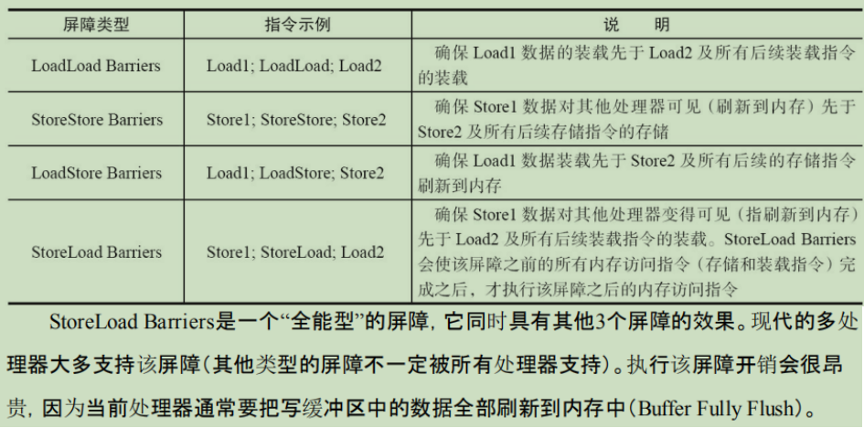
顺序一致性
JMM对正确同步的多线程程序的内存一致性做了如下保证：如果程序是正确同步的，程序的执行将具有顺序一致性（Sequentially Consistent），即程序的执行结果与该程序在顺序一致性内存模型中的执行结果相同。
- 顺序一致性内存模型
是一种理想模型，有两大特性:
1、一个线程中的所有操作必须按照程序的顺序来执行。
2、(不管程序是否同步)所有线程都只能看到一个单一的操作执行顺序。在顺序一致性内存模型中，每个操作都必须原子执行且立刻对所有线程可见。
JMM不提供顺序一致性保证，即:
JMM不保证单线程内的操作会按程序的顺序执行;
未同步程序在JMM中不但整体的执行顺序是无序的，而且所有线程看到的操作执行顺序也可能不一致。一个线程的写操作只有刷新到内存后，这个操作才对其他线程可见。
JMM不保证对64位的long型和double型变量的写操作具有原子性，而顺序一致性模型保证对所有的内存读/写操作都具有原子性。
对于正确同步的程序，JMM允许临界区的代码执行重排序(保证不会逸出到临界区外)以提高执行效率。
锁内存语义
-
锁释放-存取的内存语义
线程A释放一个锁，实质上是线程A向接下来将要获取这个锁的某个线程发出了(线程A对共享变量所做修改的)消息。
线程B获取一个锁，实质上是线程B接收了之前某个线程发出的(在释放这个锁之前对共享变量所做修改的)消息。
线程A释放锁，随后线程B获取这个锁，这个过程实质上是线程A通过主内存向线程B发送消息。
对比锁释放-获取的内存语义与volatile写-读的内存语义可以看出:
锁释放与volatile写有相同的内存语义；锁获取与volatile读有相同的内存语义. -
CAS
java中的unsafe.compareAndSwapInt(..)方法中会根据是否是多处理器来为cmpxchg指令添加lock前缀， 对于添加了lock前缀的指令，在intel处理器上有:
1.确保对内存的读-改-写操作原子执行；
2.禁止该指令，与之前和之后的读和写指令重排序；
3.把写缓冲区中的所有数据刷新到内存中。
2、3操作具有的内存屏障效果，足以同时实现volatile读-写内存语义。 -
concurrent包实现
由于Java的CAS同时具有volatile读和volatile写的内存语义，因此Java线程之间的通信现在有了下面4种方式: 1）A线程写volatile变量，随后B线程读这个volatile变量。 2）A线程写volatile变量，随后B线程用CAS更新这个volatile变量。 3）A线程用CAS更新一个volatile变量，随后B线程用CAS更新这个volatile变量。 4）A线程用CAS更新一个volatile变量，随后B线程读这个volatile变量。 通用模式: 首先，声明共享变量为volatile; 然后，使用CAS的原子条件更新来实现线程之间的同步; 同时，配合以volatile的读/写和CAS所具有的volatile读和写的内存语义来实现线程之间的通信。 AQS，非阻塞数据结构和原子变量类（java.util.concurrent.atomic包中的类），这些concurrent包中的基础类 都是使用这种模式来实现的，而concurrent包中的高层类(如Lock、同步器、Executor、并发容器) 又是依赖于这些基础类来实现的。
final域内存语义
对于final域，编译器和处理器要遵守两个重排序规则。
1）在构造函数内对一个final域的写入，与随后把这个被构造对象的引用赋值给一个引用变量，这两个操作之间不能重排序。具体实现为, JMM禁止编译器把final域的写 重排序到构造函数之外, 以及编译器会在final域的写之后，构造函数return之前，插入一个StoreStore屏障，这个屏障禁止处理器把final域的写重排序到构造函数之外。
因此写final域的重排序规则可以确保：在对象引用为任意线程可见之前，对象的final域已经被 正确初始化过了，而普通域不具有这个保障。
2）初次读一个包含final域的对象的引用，与随后初次读这个final域，这两个操作之间不能重排序。初次读对象引用与初次读该对象包含的final域，这两个操作之间存在间接依赖关系。由于编译器遵守间接依赖关系，因此编译器不会重排序这两个操作。具体实现为编译器会在读final域之前加入一个LoadLoad屏障。
- final域为引用类型
对于引用类型，写final域的重排序规则对编译器和处理器增加了如下约束：在构造函数内对一个final引用的对象的成员域的写入，与随后在构造函数外把这个被构造对象的引用赋值给一个引用变量，这两个操作之间不能重排序。
happens-before
在JMM中，如果一个操作执行的结果需要对另一个操作可见，那么这两个操作之间必须要存在happens-before关系。这里提到的两个操作既可以是在一个线程之内，也可以是在不同线程之间。
两个操作之间具有happens-before关系，并不意味着前一个操作必须要在后一个操作之前执行！
happens-before仅仅要求前一个操作（执行的结果）对后一个操作可见，且前一个操作按顺序排在第二个操作之前(但不意味前一个操作会先执行)。
- happend-before规则
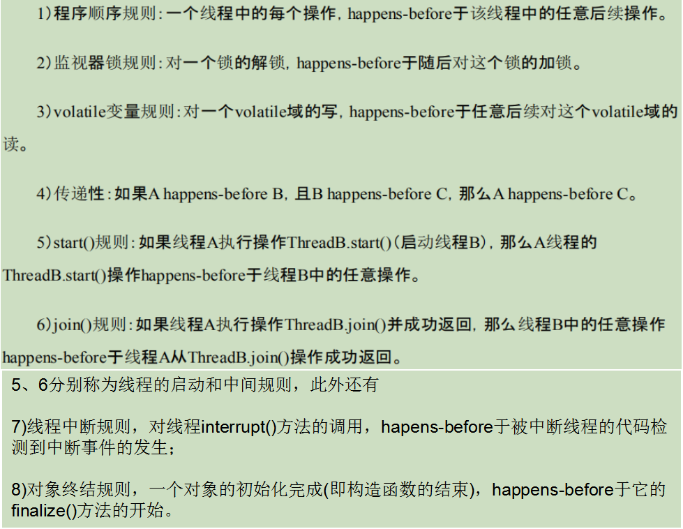
双重检查锁定
- 延迟初始化: 在Java程序中，有时候可能需要推迟一些高开销的对象初始化操作，并且只有在使用这些对象时才进行初始化。 双重检查锁定是一种常见但错误的延迟初始化用法。
public class DoubleCheckedLocking { // 1
private static Instance instance; // 2
public static Instance getInstance() { // 3
if (instance == null) { // 4:第一次检查
synchronized (DoubleCheckedLocking.class) { // 5:加锁
if (instance == null) // 6:第二次检查
instance = new Instance(); // 7:问题的根源出在这里
} // 8
} // 9
return instance; // 10
} // 11
}
-
问题分析: 如果有两个线程访问getInstance方法，A线程已经执行到第7步，B线程执行到第4步；
第7步执行初始化对象时，一共有三步:
memory = allocate(); // 1：分配对象的内存空间
ctorInstance(memory); // 2：初始化对象
instance = memory; // 3：设置instance指向刚分配的内存地址
其中2、3由于重排序(这样并不会改变单线程程序执行结果，所以JMM是允许的)，可能实际执行顺序是3，2；
假设A线程先执行的是步骤3，尚未初始化对象，而B线程在判断instance==null时得到false, 将会返回instance，得到一个尚未初始化的对象。 -
解决方案
1、使用volatile修饰instance变量，这样初始化对象的步骤2、3之间的重排序在多线程环境下就会被禁止。 2、基于类初始化的解决方案。JVM在类的初始化阶段（即在Class被加载后，且被线程使用之前），会执行类的初始化。在执行类的初始化期间，JVM会去获取一个锁。这个锁可以同步多个线程对同一个类的初始化。 基于这个特性，可以实现另一种线程安全的延迟初始化方案（这个方案被称之为 Initialization On Demand Holder idiom）。据Java语言规范，在首次发生下列任意一种情况时，一个类或接口类型T将被立即初始化。 1）T是一个类，而且一个T类型的实例被创建。 2）T是一个类，且T中声明的一个静态方法被调用。 3）T中声明的一个静态字段被赋值。 4）T中声明的一个静态字段被使用，而且这个字段不是一个常量字段。 5）T是一个顶级类，而且一个断言语句嵌套在T内部被执行。 而初始化一个类，包括执行这个类的静态初始化和初始化在这个类中声明的静态字段
基于volatile的双重检查锁定的方案有一个额外的优势:除了可以对静态字段实现延迟初始化外， 还可以对实例字段实现延迟初始化; 字段延迟初始化降低了初始化类或创建实例的开销，但增加了访问被延迟初始化的字段的开销。 在大多数时候，正常的初始化要优于延迟初始化。 如果确实需要对实例字段使用线程安全的延迟初始化，使用基于volatile的延迟初始化的方案； 如果确实需要对静态字段使用线程安全的延迟初始化，使用基于类初始化的方案。
public class InstanceFactory {
private static class InstanceHolder {
public static Instance instance = new Instance();
}
public static Instance getInstance() {
return InstanceHolder.instance ; // 这里将导致InstanceHolder类被初始化
}
}
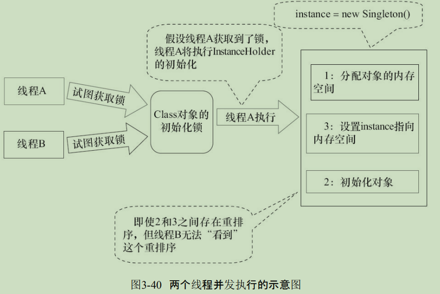